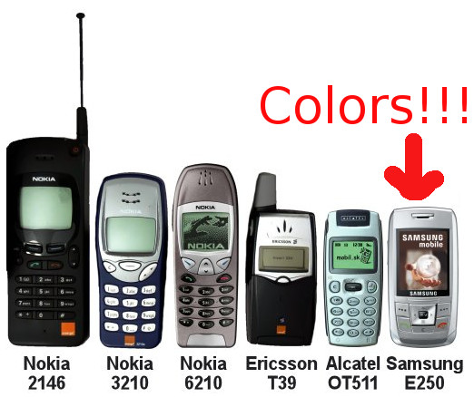
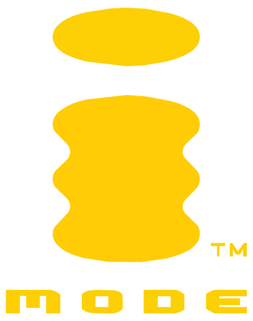
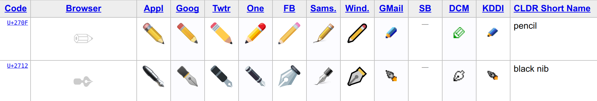

The journey to get pizzas while looking for 🍕
A story about emoji and Elasticsearch
@damienalexandre
PHP, Elasticsearch, Symfony, Emoji

Development, consulting, audit and training
In Lausanne 🇨🇭 and Paris 🇫🇷
…Poney, Guinness and animated gif.
What's emoji?
- Since the beginning of writing, text is used to convey emotions
- Sometime text is too long so emoticons were introduced
- :-) for happy
- :'( for sad
- SMS on mobile phone increased this need 📱
The first emoticon
- Abraham Lincoln in 1862: "(applause and laughter ;)"
- Scott Fahlman in 1982 with :-) and :-(
I propose that the following character sequence for joke markers:
:-)
Our phones evolved
In 1998, Japanese operators introduced 172 12x12 pixels pictogram for messaging!
This collection is now part of MoMA permanent exhibit
It was chaos
- Each operator got it's own proprietary set - trying to be funnier than the others 😎
- Pictograms were encoded on 2 bytes in a private use Unicode range...
- ... So you could have colisions between operator for different symbols!
- You could send a 🍔️ and the recipient got 🔥
- With time, operators had to hardcode specific mappings...
The birth of Emoji
- 855 emoji standardized in Unicode 6.0 in 2010
- Existing Japanese pictogram were kept
- New ones were added
- Existing icons in Unicode got their Emoji representation
🍢 🍤 🍥 🏯 👘 🎌 🗻 🎏
😑 😬 💩 🦄 🐙 🚙 🌦 🎸
Adoption
- Early standard iPhone support in 2008, Japan only 🇯🇵
- Complete support in 2011
- Everyone followed, from Android to Windows
□ Support today □
- Apple iOS and OSX are leaders, it works in all apps
- Android since 4.1
- Microsoft Windows 10 (partial in 8 and 7)
- Linux 🐧...
Build it yourself!Ubuntu 18.04 native - caniemoji.com
- Common issues: black and white only ☃️, tofu □...
In Unicode
- 🍕 is code point U+1F355
- 🏳 is code point U+1F3F3
- 🌈 is code point U+1F308
It's just text displayed as images by your device!
Image representation
Each vendor have to design it's own image (and it's hard):

But remember - it's just text at the end.
There is more complexity
Composition
-
The following ZWJ Sequence display a rainbow flag!
- 🏳 U+1F3F3
- ZWJ U+200D
- 🌈 U+1F308
Modifiers
-
Fitzpatrick modifiers to change the skin tone and hair color:
- 🤘 U+1F918
- 🏽 U+1F3FD
Variation selector
-
You can force the color or text representation
- U+FE0E for text: 🏳️
- U+FE0F for image: 🏳
Flags
-
Each country got it's own based on ISO 3166-1:
- 🇨 U+1F1E8 and 🇦 U+1F1E6 display 🇨🇦
- 🇨🇭 🇫🇷 🇦🇪 🇸🇪
Emoji can express
anything
- Work 👮
- Emotions 😍
- Food 🍕
- Animals 🐘
- Sports 🚴
- Objets 💐
There no way out
- Word of the Year 2015 in Oxford English Dictionary: 😂
- World Emoji Day on 17 of July 🎉
- Emojimovie: Express Yourself, in theaters last year 🎥
- Supported everywhere, very easy to type ⌨
- Emojipedia.org got an average of 22 million page view per month 💥
Yes, users are going to type 🍕 in your search box!
How to search like YELP
Standards to the rescue
- Unicode has emoji search recommendations in TR51
- Each emoji must be indexed with it's annotations
- Annotations are part of CLDR
CLDR annotations of 🍕
- English: pizza, cheese, slice
- French: pizza, fromage, tranche
We have to index "pizza"
when the document contains a 🍕 emoji
Sounds like a job for synonyms!
Elasticsearch Analyzer
- char_filter : Searching 🍕 in Elasticsearch
- tokenizer : Searching 🍕 in Elasticsearch
- token_filter : searching 🍕 in elasticsearch
🏷 synonym token_filter can add Emoji annotations
Synonym token filter
PUT demo
{
"settings": {
"analysis": {
"filter": {
"english_emoji": {
"type": "synonym",
"synonyms": ["🍕 => 🍕, cheese, pizza, slice"]
},
}
}
}
}BUT WAIT
GET _analyze
{
"analyzer": "standard",
"text": "Pizza"
}
{
"tokens": [
{
"token": "pizza",
"start_offset": 0,
"end_offset": 5,
"type": "<ALPHANUM>",
"position": 0
}
]
}
👍
GET _analyze
{
"analyzer": "standard",
"text": "🍕"
}{
"tokens": []
}
👎
Elasticsearch
does not like emoji
No 🍕 token, no synonym!
- The standard tokenizer is based on "Unicode Text Segmentation" version 17, published in 2010, before Emoji standardization
- Emoji are excluded like punctuation
😖
whitespace tokenizer
-
☑ The good
- Emoji are kept! 😎
-
❌ The bad
- Dumb
- Keep all punctuation
- Does not lowercase
GET _analyze
{
"tokenizer": "whitespace",
"text": "Pineapple 🍕!"
}{
"tokens": [
{
"token": "Pineapple",
"type": "word"
},
{
"token": "🍕!",
"type": "word"
}
]
}Cleaning with token_filter
"punctuation_filter": {
"type": "pattern_replace",
"pattern": "\\p{Punct}",
"replace": ""
},
"remove_empty_filter": {
"type": "length",
"min": 1
}\\p{Punct} catch punctuation:
!"#$%&'()*+,-./:;<=>?@[]^_`{|}~
More cleaning
- \uFE0E VARIATION SELECTOR-15 (force text representation)
- \uFE0F VARIATION SELECTOR-16 (force graphic representation)
- \uD83C\uDFFB EMOJI MODIFIER FITZPATRICK TYPE-1–2 (skin tone)
- \uD83C\uDFFC EMOJI MODIFIER FITZPATRICK TYPE-3 (skin tone)
- \uD83C\uDFFD EMOJI MODIFIER FITZPATRICK TYPE-4 (skin tone)
- \uD83C\uDFFE EMOJI MODIFIER FITZPATRICK TYPE-5 (skin tone)
- \uD83C\uDFFF EMOJI MODIFIER FITZPATRICK TYPE-6 (skin tone)
- \u200D ZERO WIDTH JOINER
Complete the token_filter
"punctuation_filter": {
"type": "pattern_replace",
"pattern": "\\p{Punct}|\\uFE0E|\\uFE0F|\\uD83C\\uDFFB|\\uD83C\\uDFFC|\\uD83C\\uDFFD|\\uD83C\\uDFFE|\\uD83C\\uDFFF",
"replace": ""
}
ZWJ to be remove sooner via char_filter
"zwj_char_filter": {
"type": "mapping",
"mappings": [
"\\u200D=>"
]
}
The complete analyzer
{
"settings": {
"analysis": {
"analyzer": {
"english_with_emoji": {
"char_filter": "zwj_char_filter",
"tokenizer": "whitespace",
"filter": [
"lowercase",
"punctuation_filter",
"remove_empty_filter",
"english_emoji"
]
}
},
"char_filter": {
"zwj_char_filter": {
"type": "mapping",
"mappings": [
"\\u200D=>"
]
}
},
"filter": {
"remove_empty_filter": {
"type": "length",
"min": 1
},
"english_emoji": {
"type": "synonym",
"synonyms": ["🍕 => 🍕, cheese, pizza, slice"]
},
"punctuation_filter": {
"type": "pattern_replace",
"pattern": """\p{Punct}|\uFE0E|\uFE0F|\uD83C\uDFFB|\uD83C\uDFFC|\uD83C\uDFFD|\uD83C\uDFFE|\uD83C\uDFFF""",
"replace": ""
}
}
}
}
}
It works!
GET /demo/_analyze
{
"analyzer": "english_with_emoji",
"text": "A 🍕 please!"
}a 🍕 cheese pizza slice please
Emoji search made easy
- We can search with "Pizza"
- We can search with "🍕"
One emoji done, 2776 to go!
😱
The synonym file
- CLDR publish (on SVN 😱) annotations for all languages
- I maintain easy to use synonym files from those data:
🐻 => 🐻, bear, bear face, face
🐨 => 🐨, bear, koala
🐼 => 🐼, face, panda, panda face
🐾 => 🐾, feet, paw, paw prints, print
🦃 => 🦃, bird, turkey
🐔 => 🐔, bird, chicken
🐓 => 🐓, bird, rooster
🐣 => 🐣, baby, bird, chick, hatching, hatching chick
🐤 => 🐤, baby, baby chick, bird, chick
🐥 => 🐥, baby, bird, chick, front-facing baby chick
🌴 => 🌴, palm, palm tree, tree
🌵 => 🌵, cactus, plant
🌾 => 🌾, ear, grain, rice, sheaf of rice
🌿 => 🌿, herb, leaf
☘ => ☘, plant, shamrock
🍀 => 🍀, 4, clover, four, four leaf clover, leaf
🍁 => 🍁, falling, leaf, maple, maple leaf
🍂 => 🍂, fallen leaf, falling, leaf
🍃 => 🍃, blow, flutter, leaf, leaf fluttering in wind, wind
🍇 => 🍇, fruit, grape, grapesThank you
👏
We can do better! 💪
ICU, CLDR and Unicode move fast
- ICU support Emoji for a long time
- ICU is exposed as Elastic plugin: analysis-icu
- Use version 59.1 of icu4j
- Currently available version is 61.1
- Still, Lucene ICUTokenizer tag Emoji as "not words" 😔
ICUTokenizer not compatible
GET /demo/_analyze
{
"tokenizer": "icu_tokenizer",
"filter": [
"english_emoji"
],
"text": "A 🍕 please!"
}Error illegal_argument_exception: term: 🍕 was completely eliminated by analyzer
ICUTokenizer not compatible
GET /demo/_analyze
{
"tokenizer": "icu_tokenizer",
"text": "A 🍕 please!"
}A please
Deep in Lucene code
ICUTokenizer.java, status 0 means ignored:
// find the next set of boundaries,
// skipping over non-tokens (rule status 0)
int end = breaker.next();
while (end != BreakIterator.DONE
&& breaker.getRuleStatus() == 0) {
start = end;
end = breaker.next();
}
Unicode use SVN 😱
RBBI and RuleStatus
!!chain;
$CR = [\p{Word_Break = CR}];
$LF = [\p{Word_Break = LF}];
$Newline = [\p{Word_Break = Newline} ];
$Extend = [\p{Word_Break = Extend}];
$ZWJ = [\p{Word_Break = ZWJ}];
$Regional_Indicator = [\p{Word_Break = Regional_Indicator}];
$Format = [\p{Word_Break = Format}];
$Katakana = [\p{Word_Break = Katakana}];
$Hebrew_Letter = [\p{Word_Break = Hebrew_Letter}];
$ALetter = [\p{Word_Break = ALetter}];
$Single_Quote = [\p{Word_Break = Single_Quote}];
$Double_Quote = [\p{Word_Break = Double_Quote}];
$MidNumLet = [\p{Word_Break = MidNumLet}];
$MidLetter = [\p{Word_Break = MidLetter}];
$MidNum = [\p{Word_Break = MidNum}];
$Numeric = [\p{Word_Break = Numeric}];
$ExtendNumLet = [\p{Word_Break = ExtendNumLet}];
$E_Base = [\p{Word_Break = EB}\U0001F3C2\U0001F3C7\U0001F3CC\U0001F46A-\U0001F46D\U0001F46F\U0001F574\U0001F6CC];
$E_Modifier = [\p{Word_Break = EM}];
$Extended_Pict = [\U0001F774-\U0001F77F\u2700-\u2701\u2703-\u2704\u270E\u2710-\u2711\u2765-\u2767\U0001F030-\U0001F093\U0001F094-\U0001F09F\U0001F10D-\U0001F10F\U0001F12F\U0001F16C-\U0001F16F\U0001F1AD-\U0001F1E5\U0001F203-\U0001F20F\U0001F23C-\U0001F23F\U0001F249-\U0001F24F\U0001F252-\U0001F2FF\U0001F7D5-\U0001F7FF\U0001F000-\U0001F003\U0001F005-\U0001F02B\U0001F02C-\U0001F02F\U0001F322-\U0001F323\U0001F394-\U0001F395\U0001F398\U0001F39C-\U0001F39D\U0001F3F1-\U0001F3F2\U0001F3F6\U0001F4FE\U0001F53E-\U0001F548\U0001F54F\U0001F568-\U0001F56E\U0001F571-\U0001F572\U0001F57B-\U0001F586\U0001F588-\U0001F589\U0001F58E-\U0001F58F\U0001F591-\U0001F594\U0001F597-\U0001F5A3\U0001F5A6-\U0001F5A7\U0001F5A9-\U0001F5B0\U0001F5B3-\U0001F5BB\U0001F5BD-\U0001F5C1\U0001F5C5-\U0001F5D0\U0001F5D4-\U0001F5DB\U0001F5DF-\U0001F5E0\U0001F5E2\U0001F5E4-\U0001F5E7\U0001F5E9-\U0001F5EE\U0001F5F0-\U0001F5F2\U0001F5F4-\U0001F5F9\u2605\u2607-\u260D\u260F-\u2610\u2612\u2616-\u2617\u2619-\u261C\u261E-\u261F\u2621\u2624-\u2625\u2627-\u2629\u262B-\u262D\u2630-\u2637\u263B-\u2647\u2654-\u265F\u2661-\u2662\u2664\u2667\u2669-\u267A\u267C-\u267E\u2680-\u2691\u2695\u2698\u269A\u269D-\u269F\u26A2-\u26A9\u26AC-\u26AF\u26B2-\u26BC\u26BF-\u26C3\u26C6-\u26C7\u26C9-\u26CD\u26D0\u26D2\u26D5-\u26E8\u26EB-\u26EF\u26F6\u26FB-\u26FC\u26FE-\u26FF\u2388\U0001FA00-\U0001FFFD\U0001F0A0-\U0001F0AE\U0001F0B1-\U0001F0BF\U0001F0C1-\U0001F0CF\U0001F0D1-\U0001F0F5\U0001F0AF-\U0001F0B0\U0001F0C0\U0001F0D0\U0001F0F6-\U0001F0FF\U0001F80C-\U0001F80F\U0001F848-\U0001F84F\U0001F85A-\U0001F85F\U0001F888-\U0001F88F\U0001F8AE-\U0001F8FF\U0001F900-\U0001F90F\U0001F91F\U0001F928-\U0001F92F\U0001F931-\U0001F932\U0001F93F\U0001F94C-\U0001F94F\U0001F95F-\U0001F97F\U0001F992-\U0001F9BF\U0001F9C1-\U0001F9FF\U0001F6C6-\U0001F6CA\U0001F6E6-\U0001F6E8\U0001F6EA\U0001F6F1-\U0001F6F2\U0001F6D3-\U0001F6DF\U0001F6ED-\U0001F6EF\U0001F6F7-\U0001F6FF];
$EBG = [\p{Word_Break = EBG}];
$EmojiNRK = [[\p{Emoji}] - [\p{Word_Break = Regional_Indicator}\u002a\u00230-9©®™〰〽]];
$Han = [:Han:];
$Hiragana = [:Hiragana:];
$Control = [\p{Grapheme_Cluster_Break = Control}];
$HangulSyllable = [\uac00-\ud7a3];
$ComplexContext = [:LineBreak = Complex_Context:];
$KanaKanji = [$Han $Hiragana $Katakana];
$dictionaryCJK = [$KanaKanji $HangulSyllable];
$dictionary = [$ComplexContext $dictionaryCJK];
$ALetterPlus = [$ALetter-$dictionaryCJK [$ComplexContext-$Extend-$Control]];
$KatakanaEx = $Katakana ($Extend | $Format | $ZWJ)*;
$Hebrew_LetterEx = $Hebrew_Letter ($Extend | $Format | $ZWJ)*;
$ALetterEx = $ALetterPlus ($Extend | $Format | $ZWJ)*;
$Single_QuoteEx = $Single_Quote ($Extend | $Format | $ZWJ)*;
$Double_QuoteEx = $Double_Quote ($Extend | $Format | $ZWJ)*;
$MidNumLetEx = $MidNumLet ($Extend | $Format | $ZWJ)*;
$MidLetterEx = $MidLetter ($Extend | $Format | $ZWJ)*;
$MidNumEx = $MidNum ($Extend | $Format | $ZWJ)*;
$NumericEx = $Numeric ($Extend | $Format | $ZWJ)*;
$ExtendNumLetEx = $ExtendNumLet ($Extend | $Format | $ZWJ)*;
$Regional_IndicatorEx = $Regional_Indicator ($Extend | $Format | $ZWJ)*;
$Ideographic = [\p{Ideographic}];
$HiraganaEx = $Hiragana ($Extend | $Format | $ZWJ)*;
$IdeographicEx = $Ideographic ($Extend | $Format | $ZWJ)*;
!!forward;
$CR $LF;
$ZWJ ($Extended_Pict | $EmojiNRK);
[^$CR $LF $Newline]? ($Extend | $Format | $ZWJ)+;
$NumericEx {100};
$ALetterEx {200};
$HangulSyllable {200};
$Hebrew_LetterEx{200};
$KatakanaEx {400};
$HiraganaEx {400};
$IdeographicEx {400};
$E_Base ($Extend | $Format | $ZWJ)*;
$E_Modifier ($Extend | $Format | $ZWJ)*;
$Extended_Pict ($Extend | $Format | $ZWJ)*;
($ALetterEx | $Hebrew_LetterEx) ($ALetterEx | $Hebrew_LetterEx) {200};
($ALetterEx | $Hebrew_LetterEx) ($MidLetterEx | $MidNumLetEx | $Single_QuoteEx) ($ALetterEx | $Hebrew_LetterEx) {200};
$Hebrew_LetterEx $Single_QuoteEx {200};
$Hebrew_LetterEx $Double_QuoteEx $Hebrew_LetterEx {200};
$NumericEx $NumericEx {100};
($ALetterEx | $Hebrew_LetterEx) $NumericEx {200};
$NumericEx ($ALetterEx | $Hebrew_LetterEx) {200};
$NumericEx ($MidNumEx | $MidNumLetEx | $Single_QuoteEx) $NumericEx {100};
$KatakanaEx $KatakanaEx {400};
$ALetterEx $ExtendNumLetEx {200};
$Hebrew_LetterEx $ExtendNumLetEx {200};
$NumericEx $ExtendNumLetEx {100};
$KatakanaEx $ExtendNumLetEx {400};
$ExtendNumLetEx $ExtendNumLetEx {200};
$ExtendNumLetEx $ALetterEx {200};
$ExtendNumLetEx $Hebrew_Letter {200};
$ExtendNumLetEx $NumericEx {100};
$ExtendNumLetEx $KatakanaEx {400};
($E_Base | $EBG) ($Format | $Extend | $ZWJ)* $E_Modifier;
^$Regional_IndicatorEx $Regional_IndicatorEx;
$HangulSyllable $HangulSyllable {200};
$KanaKanji $KanaKanji {400};
!!reverse;
$BackHebrew_LetterEx = ($Format | $Extend | $ZWJ)* $Hebrew_Letter;
$BackALetterEx = ($Format | $Extend | $ZWJ)* $ALetterPlus;
$BackSingle_QuoteEx = ($Format | $Extend | $ZWJ)* $Single_Quote;
$BackDouble_QuoteEx = ($Format | $Extend | $ZWJ)* $Double_Quote;
$BackMidNumLetEx = ($Format | $Extend | $ZWJ)* $MidNumLet;
$BackNumericEx = ($Format | $Extend | $ZWJ)* $Numeric;
$BackMidNumEx = ($Format | $Extend | $ZWJ)* $MidNum;
$BackMidLetterEx = ($Format | $Extend | $ZWJ)* $MidLetter;
$BackKatakanaEx = ($Format | $Extend | $ZWJ)* $Katakana;
$BackHiraganaEx = ($Format | $Extend | $ZWJ)* $Hiragana;
$BackExtendNumLetEx = ($Format | $Extend | $ZWJ)* $ExtendNumLet;
$BackRegional_IndicatorEx = ($Format | $Extend | $ZWJ)* $Regional_Indicator;
$LF $CR;
($Extended_Pict | $EmojiNRK) $ZWJ;
($Format | $Extend | $ZWJ)* [^$CR $LF $Newline]?;
($BackALetterEx | $BackHebrew_LetterEx) ($BackALetterEx | $BackHebrew_LetterEx);
($BackALetterEx | $BackHebrew_LetterEx) ($BackMidLetterEx | $BackMidNumLetEx | $BackSingle_QuoteEx) ($BackALetterEx | $BackHebrew_LetterEx);
$BackSingle_QuoteEx $BackHebrew_LetterEx;
$BackHebrew_LetterEx $BackDouble_QuoteEx $BackHebrew_LetterEx;
$BackNumericEx $BackNumericEx;
$BackNumericEx ($BackALetterEx | $BackHebrew_LetterEx);
($BackALetterEx | $BackHebrew_LetterEx) $BackNumericEx;
$BackNumericEx ($BackMidNumEx | $BackMidNumLetEx | $BackSingle_QuoteEx) $BackNumericEx;
$BackKatakanaEx $BackKatakanaEx;
$BackExtendNumLetEx ($BackALetterEx | $BackHebrew_LetterEx | $BackNumericEx | $BackKatakanaEx | $BackExtendNumLetEx);
($BackALetterEx | $BackHebrew_LetterEx | $BackNumericEx | $BackKatakanaEx) $BackExtendNumLetEx;
$HangulSyllable $HangulSyllable;
$KanaKanji $KanaKanji;
$E_Modifier ($Format | $Extend | $ZWJ)* ($E_Base | $EBG);
^$BackRegional_IndicatorEx / ($BackRegional_IndicatorEx $BackRegional_IndicatorEx)* ($Format | $Extend | $ZWJ)* [[^$Regional_Indicator $Format $Extend $ZWJ] {eof}];
^$BackRegional_IndicatorEx $BackRegional_IndicatorEx / ($BackRegional_IndicatorEx $BackRegional_IndicatorEx)* ($Format | $Extend | $ZWJ)* [[^$Regional_Indicator $Format $Extend $ZWJ] {eof}];
($Extended_Pict | $EmojiNRK) $ZWJ $BackRegional_IndicatorEx / ($BackRegional_IndicatorEx $BackRegional_IndicatorEx)* ($Format | $Extend | $ZWJ)* [[^$Regional_Indicator $Format $Extend $ZWJ] {eof}];
($Extended_Pict | $EmojiNRK) $ZWJ $BackRegional_IndicatorEx $BackRegional_IndicatorEx / ($BackRegional_IndicatorEx $BackRegional_IndicatorEx)* ($Format | $Extend | $ZWJ)* [[^$Regional_Indicator $Format $Extend $ZWJ] {eof}];
!!safe_reverse;
($Extend | $Format | $ZWJ)+ .?;
($MidLetter | $MidNumLet | $Single_Quote) ($BackALetterEx | $BackHebrew_LetterEx);
$Double_Quote $BackHebrew_LetterEx;
($MidNum | $MidNumLet | $Single_Quote) $BackNumericEx;
$BackRegional_IndicatorEx*;
$dictionary $dictionary;
!!safe_forward;
($Extend | $Format | $ZWJ)+ .?;
($MidLetterEx | $MidNumLetEx | $Single_QuoteEx) ($ALetterEx | $Hebrew_LetterEx);
$Double_QuoteEx $Hebrew_LetterEx;
($MidNumEx | $MidNumLetEx | $Single_QuoteEx) $NumericEx;
$Regional_IndicatorEx*;
$dictionary $dictionary;
RBBI et RuleStatus
!!forward;
$CR $LF;
$ZWJ ($Extended_Pict | $EmojiNRK);
$NumericEx {100};
$ALetterEx {200};
$E_Base ($Extend | $Format | $ZWJ)*;
$E_Modifier ($Extend | $Format | $ZWJ)*;
There is no "status" for Emoji
ICUTokenizer rule_files
- Fonctionnalité expérimentale dans icu_tokenizer
-
Possibilité de déclarer des fichiers de rules RBBI :
"tokenizer" : { "icu_user_file" : { "type" : "icu_tokenizer", "rule_files" : "Latn:KeywordTokenizer.rbbi" } } - ❌ Ne remplis pas mon besoin car lié à une écriture, et écrase les régles pré-définis
Notre propre plugin !
😮 😮 😮
Spécifications
- La dernière version d'ICU
- Tokenizer compatible icu_tokenizer
- Marquer les emoji avec le status {200}
- Éventuellement embarquer les synonymes
- Simplifier le support des emoji 👌
Écrire un plugin
- Documentation "Allez voir le code ici"
- Pas d'explication sur les bonnes pratiques
- Comment builder ? Distribuer ?
- Avec Elasticsearch 5, une release par version d'Elasticsearch
- Un effort en cours pour aider à la réalisation de plugin Ingest
Écrire un plugin
- Build basé sur Gradle
- Il faut Gradle 2.13 uniquement !
- Plein de checks automatique
- Pas de documentation sur la configuration
- Zéro connaissance de l'écosystème Java 😯
Quelques flags utiles
licenseHeaders.enabledcheckstyleTest.enableddependencyLicenses.enabledthirdPartyAudit.enabledtest.enabled
Commandes Gradle
gradle idea💗 pour IntelliJgradle tasksgradle clean checkpour buildergradle clean check assemblepour publier
Gradle fait tout
Le livrable final est fait automatiquement :
analysis-emoji-5.0.0.zip
└── elasticsearch
├── analysis-emoji-5.0.0.jar
├── icu4j-58.1.jar
├── lucene-analyzers-icu-6.2.0.jar
└── plugin-descriptor.properties
description=Add support for emoji in Elasticsearch
version=5.0.0
name=analysis-emoji
classname=org.elasticsearch.plugin.analysis.emoji.EmojiPlugin
java.version=1.8
elasticsearch.version=5.0.0
Plugin simple
Juste un TokenizerFactory, des tests et une configuration custom pour ICUTokenizer :
defaultRules = defaultRules.replace(
"!!forward;",
"!!forward;\n$EmojiNRK {200};"
);
defaultRules = defaultRules.replace(
"| $ZWJ)*;",
"| $ZWJ)* {200};"
);
Plein d'idées pour la suite
- Le développement est ouvert sur Github
- https://github.com/jolicode/emoji-search
- Toute aide est la bienvenue 💘
- 🆘 Vraiment, HELP ! 🆘
Utilisation
"analyzer": {
"english_with_emoji": {
"tokenizer": "emoji_tokenizer",
"filter": [
"lowercase",
"english_emoji"
]
}
}Résultat
GET /en-emoji/_analyze?analyzer=english_with_emoji
{
"text": "I live in 🇫🇷 and I'm 👩🚀"
}i live in 🇫🇷 france and i'm 👩🚀 astronaut rocket woman
Gérer les emoticons
:-) :D :-( ^_^ ;-) <3
On va simplement mapper les emoticons vers leurs emoji respectifs avant la tokenisation !
Mapping emoticons
:P=>😛
8-)=>😎
:s=>😒
:|=>😐
O:-D=>😇
</3=>💔
:'-|=>😢
Un nouveau char_filter
"char_filter": {
"emoticons_char_filter": {
"type": "mapping",
"mappings_path": "analysis/emoticons.txt"
}
},Fichier de mapping disponible : https://github.com/jolicode/emoji-search/blob/master/emoticons.txt
Un nouveau char_filter
"analyzer": {
"english_with_emoji": {
"char_filter": ["emoticons_char_filter"],
"tokenizer": "emoji_tokenizer",
"filter": [
"lowercase",
"english_emoji"
]
}
}Résultat
GET /en-emoji/_analyze?analyzer=english_with_emoji
{
"text": "Hi mom :)"
}hi mom 😃 face mouth open smile
Pour résumer
- Les emoji sont des lettres comme les autres 🔠
- Leur recherche se base sur des synonymes 👥
- Le CLDR produit ses annotations pour nous 📝
- Écrire un plugin Elasticsearch c'est dur 👷
- Venez m'aider 🙏
À vos questions !
Merci pour votre attention 🤘